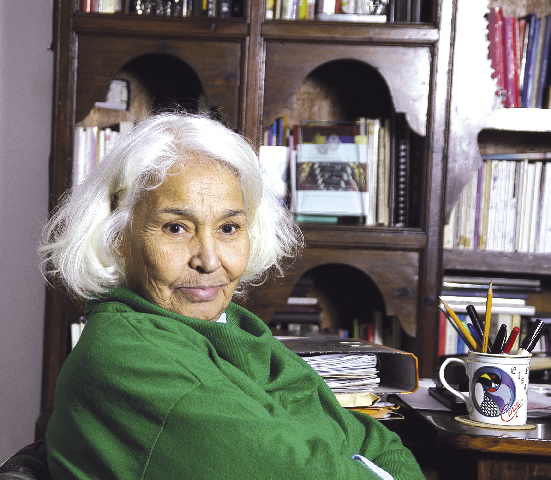

پذيرش > تریبون > مقالات > نوال السعداوی: ما دوباره یک ملت شدیم، بدون مرزهای جنسیتی و مذهبی


 نوال السعداوی: ما دوباره یک ملت شدیم، بدون مرزهای جنسیتی و مذهبی نوال السعداوی: ما دوباره یک ملت شدیم، بدون مرزهای جنسیتی و مذهبی
2 اسفند 1389 - - نسخه قابل چاپ
تغییر برای برابری / ترجمه :نفیسه آزاد : من زندگی کرده ام تا شاهد و شریک انقلابی باشم که در مصراز 25 ژانویه شروع شد و تا امروز که این مطلب را می نویسم ، یعنی ششم فوریه ادامه داشت. میلیون ها مصری ، زن و مرد، مسلمان و مسیحی، از هر آیین و باوری، با هم بر علیه رژیم فاسد و ستمکار متحد شدند ، بر علیه آن فرعون والا مقامی که تاج و تخت خود را حتی به قیمت ریختن خون مردم حفظ می کند، بر علیه دولت فاسد اوکه مزدورانش را برای کشتن جوانان استخدام می کند، برعلیه نمایندگان پارلمان خیانتکار و تقلبی اش که نمایاننده دارایی های غیر قانونی، مواد مخدر و رشوه هستند، بر علیه روشنفکرانی که تحصیل کرده نامیده می شوند اما آگاهی و قلم های خود را فروخته اند و آموزش، اخلاقیات و فرهنگ را چوب حراج زده اند و افکار عمومی و فردی را برای به دست آوردن منافع بزرگ و کوچک و تثبیت موقعیت حاکمان گمراه می کنند.
جوانان و کودکان، زنان ومردان از خانه ها بیرون آمده اند، به رهبری خودشان و در کف حمایت خودشان! در غیاب پلیس و نیروهای امنیتی و نخبگان کنترل کننده ی رسانه و فرهنگ که این روزها در خود فرو رفته اند . بعد از سرنگونی رهبران ثروتمند و قدرت مداری که صریح یا به طور ضمنی رژیمی فاسد و دیکتاتور را برای 50 سال حمایت کرده بودند، فرصت طلبی، تبغیض نسبت به زنان و منحرف کردن ارزش های اخلاقی هم از میان رفته است. ارزش های منحرفی که خانواده ها و افراد را فاسد کرده است، ترویج هرج و مرج به نام امنیت، دیکتاتوری به نام دموکراسی، فقر و بیکاری به نام رفاه و توسعه ی اقتصادی، فحشا و خیانت به نام اخلاق و آزادی انتخاب،تحقیر و تسلیم در برابر آمریکا و اسرائیل به نام صلح و همکاری و دوستی ....چنین رژیمی که قلم های آزاد و خلاق را به بند کشیده است یا با تمام توان کوشیده که شهرتشان را لکه دار کند، یا آنها را به تبعید فرستاده است.
میلیون ها مصری، از زن و مرد ، از خانه ها بیرون آمدند در همه ی شهرها و روستاها ، آسوان، اسکندریه، سوئز و همه ی شهرهای وطن. در قاهره، یعنی پایتخت، ما 11 روز در میدان التحریر ماندیم، روز و شب . التحریر زندگی ما و خانه ی ما شده است، روی آسفالت میدان نشستیم ،سراسر میدان را دهها هزار زن و مرد در اختیار خود گرفتند.ما هرگز مکانی را که از آن ماست ترک نخواهیم کرد حتی با وجود اینکه پلیس و لباس شخصی ها به ما حمله کردند وحتی اگر میدان بازهم مورد هجوم نیروهای سازمان یافته توسط رژیم قرار بگیرد، مانند اتفاقی که در دوم فوریه افتاد،کسانی که به آنها رشوه داده شده بود (50 دلار و یک جوجه برای هر کدام و برای مقامات بالاتر هدایای بیشتری هم در نظر کرفته شده بود) با اسب و شتر به میدان هجوم آوردند در حالیکه انواع و اقسام اسلحه را با خود داشتند.
یکی از این اسب ها نزدیک بود که مرا زیر بگیرد، من با مرد جوانی نزدیکی میدان ایستاده بودیم، آنها توانستند مرا از این حمله نجات دهند، من آنها را با چشمان خودم دیدم که دور میدان می چرخیدند و به هر سمتی شلیک می کردند، .ورای دود و گرد و غباری که ما را احاطه کرده بود، من شعله های آتشی را می دیدم که به آسمان زبانه می کشید، مردان جوان بر زمین می افتادند و خون بر زمین جاری بود، چیزی شبیه جنگ میان مزدوران رژیم و زنان و مردان مصری که برای آزادی، کرامت انسانی و عدالت به خیابان ها آمده بودند در جریان بود، مردان جوان "کمیته دفاع از انقلاب" از خود دفاع کردند و پاسخی در خور به آنها دادند ، آنها تعدادی اسب و شتر را واژگون کردند و بیش از 100 مزدور را اسیر کردند که در میان آنها به گواه کارت های شناسایی، افسران امنیتی دولتی، نیروهای اطلاعاتی، نیروهای پلیس و تعدادی مجرم که از زندان به همین قصد آزاد شده بودند یافت می شد. برخی از آنها اعتراف کردند که برای این کار 200 دلار رشوه گرفته اند و قول 5000 تای دیگر هم به آنها داده شده است درصورتیکه بتوانند با استفاده از اسلحه های خود میدان را از جوانان خالی کنند.آنها جوانانی که این انقلاب را رهبری می کردند " کودکان اخلالگر " می خواندند، کلامی که مبارک - یعنی کسی که به آنها پول و دستور کشتار داده بود- به آنها آموخته بود.
مردان جوان چادرهایشان را در میدان برپا کردند، زنان به همراه کودکانشان در سرما و باران در کنار آنها ماندند. صدها زن و دختری که در میدان تحریر بودند، هرگز مورد آزار مردان قرار نگرفتند، آنها با غرور در میدان ماندند و آزادی و برابری را تجربه کردند. مسیحیان شانه به شانه ی مسلمانان در انقلاب مشارکت کردند، من در میان تعدادی از مردان اخوان المسلمین بودم ، آنها به من گفتند : ما با بعضی آراء شما در نوشته هایتان مخالف هستیم، ولی ما شما را دوست می داریم و تحسین می کنیم برای آنکه شما هیچ گاه مزورانه با هیچ رژیم یا نیرویی داخل یا خارج کشور معامله نکردید". در مدتی که در میدان تحریر قدم می زدم ، مردمان زیادی به استقبالم آمدند ، آنها می گفتند " دکتر نوال ، ما نسل جدیدی در مصر هستیم، کسانی که کتاب های شما را خوانده اند و خلاقیت و عصیانگری شما را تجسین می کند" اشک هایم جاری بود و به آنها گفتم " موقعیت خجسته ای برای ماست که بتوانیم آزادی، کرامت انسانی، برابری، خلاقیت، عصیانگری و انقلاب خود را جشن بگیریم.
زن جوانی به نام رعنا می گوید " ما به دنبال قانون اساسی جدیدی هستیم، یک قانونی مدنی تر، قانونی که تبعیضی بر مبنای نژاد، جنسیت و مذهب نداشته باشد. زن جوان دیگری که مسیحی است و نامش بوتروس داوود است می گوید " ما قانون مدنی می خواهیم که مردم را بر اساس آیین، جنسیت و مذهب از هم جدا نکند و تبعیض میانشان نگذارد" مرد جوانی با نام طریق الدمیری می گوید " جوانان این انقلاب را به ثمر رساندند و ما خود باید دولت خود را انتخاب کنیم و کمیته ای ملی برای تغییر قانون اساسی تشکیل بدهیم " . مرد جوان دیگری با نام محمد امین می گوید" ما حکومتی مردمی می خواهیم و شورایی و فرآیندی که در طی آن بتوانیم انتخاباتی شفاف و درست برای برگزیدن رئیس جمهور خود برگزار کنیم"
مرد جوان دیگری با نام احمد جلال می گوید " ما انقلابی مردمی را سامان داده ایم، بنا نهادن قرارد اجتماعی جدید نه تنها خواسته ی ما که شعار انقلابمان بوده است" . آزادی، برابری و عدالت اجتماعی، چیزهایی است که انقلاب را ساخته است و قوانین دولتی جدید را می سازد، دولت انتقالی را انتخاب می کند، کمیته ی ملی برای تغییر قانون اساسی را انتخاب می کند و کمیته ای از رهبران انقلاب را سامان می دهد، بنابراین فرصت طلبان صاحب پول و قدرت نمی توانند بیش از این چیزی را به ما تحمیل کنند. بسیاری از سیاستمداران با ما در این انقلاب مشارکت نداشتند ولی بعد از مدتی با هواپیما از اروپا و آمریکا به میان ما آمدند، کسانی که زندگیشان را بیرون از مصر گذرانده بودند و حالا برای رهبری به وطن بازگشته بودند، ما می گوییم :" کسی که انقلاب را به ثمر رساند همان کسی است که باید رهبری آن را بر عهده داشته باشد، در میان مارهبرانی 30، 40 یا 50 ساله هست. ما در میان خود متخصصانی از تمامی رشته ها مثل سیاست و اقتصاد داریم .ما کسانی هستیم که باید کمیته ی ملی تغییر قانون اساسی را شکل دهیم. محمد جوان می گوید :" برای اولین بار در زندگیم به مصری بودن خود مباهات می کنم، یاس و افسردگی از میان رفته است و شکست به پیروزی تبدیل شده است. ماهزینه ی این آزادی را با خون شهیدانمان دادیم، هیچ قدرتی نمی تواند این قدرت را از ما بازپس بگیرد.
التحریر تبدیل به کل شهر شده بود با همه ی امکاناتش، در بیمارستانی همان نزدیکی به مجروحان و زخمی ها رسیدگی می شد، دکترها و پرستاران از میان جوانان داوطلب این وظیفه را بر عهده گرفته بودند. داوطلبان با پتو و دارو و پارچه های کتان و گاز و باند و غذا و آب به میدان می آمدند، چیزی که برای من بیشتر شبیه رویا بود. من با این زنان و مردان جوان شب و روز زندگی کردم. کمیته ای از میان همین مردان و زنان جوان تشکیل داده شده بود که وظیفه ی سازمان دهی انتقال مجروحان به بیمارستان، تهیه ی آب و غذا برای ساکنین میدان، دفاع از میدان در برابر هجوم مزدوران و پاسخگویی به دروغ های رسانه های دولتی و دولت موقت دروغین و دیگر کارها را بر عهده گرفته بود.دیوارهای خانه ها، نهادها و تابوها که میان شهروندان کشیده شده بود از میان رفته بود، زنان و مردان، مسلمانان و مسیحیان بدون هیچ مرزی در کنار هم بودند. ما یک ملت شدیم بدون جدایی بر اساس جنسیت، مذهب یا دیگر چیزها، ما همه رفتن مبارک را می خواستیم، دادگاهی شدن خود و همکارانش در حزب، آنهایی که در ریختن خون مردم دست داشتند و در ظلم و ستمی که 30 سال بر مردم مصر روا داشته شده بود.
اصل مقاله را در این آدرس ببینید :
http://www.siawi.org/article2356.html
ارسال به
بالاترین
،
توییتر
،
فریندفید
،
فیسبوک
در همين بخش :
 دهمین دورۀ مراسم تندیس صدیقه دولت آبادی ۱۳۹۲ دهمین دورۀ مراسم تندیس صدیقه دولت آبادی ۱۳۹۲
کارت پستالهایی به بهانهی هشت مارس و به یاد همهی مبارزین راه برابری
بیانیه بیش از 350 تن از مدافعان حقوق زنان به مناسبت روز جهانی زن؛ زنان هر روز فرودستتر میشوند
لباسی که برای تن ما دوخته اند! /اعظم بهرامی
چالشها و چشمانداز فعالیت مدنی زنان
ديگر بخش ها :
طرح یک میلیون امضا
|
مقالات
|
سایت نوشته ها
|
اخبار
|
گزارش كمپين
|
گفت و گو
|
علیه سکوت
|
كوچه به كوچه
|
نامه های شما
|
گزارش ویژه
|
گفتگو با اعضا
|
ویژه سالگرد کمپین
|
تصویر برابری
|
دل آرام علی
|
تریبون
|
مقالات
|
تاریخ شفاهی
|
خارج از چارچوب
|
کتابخانه
|
درباره کمپین
|
کمپین در شهرها
|
کمپین در بند
|
صدای تغییر
|
ویژه 22 خرداد
|
لایحه حمایت از خانواده
|
گالری
|
عشا مومنی
|
امیر یعقوبعلی
|
خدیجه مقدم
|
راحله عسگری زاده و نسیم خسروی
|
پروین اردلان،جلوه جواهری، مریم حسین خواه، ناهید کشاورز
|
زینب پیغمبرزاده
|
سعیده امین، سارا ایمانیان، محبوبه حسین زاده، ناهید کشاورز و همایون نامی
|
احترام شادفر
|
نسیم سرابندی زاده،فاطمه دهدشتی
|
وبلاگ مهمان
|
پرونده خرم آباد
|
دستگیری ها
|
مریم مالک
|
پرستو اللهیاری
|
مهرنوش اعتمادی
|
سمیه رشیدی
|
Other Languages
|
همراهان
|
«فراخوان کمپین ده روز با بهاره هدایت»
| English
|